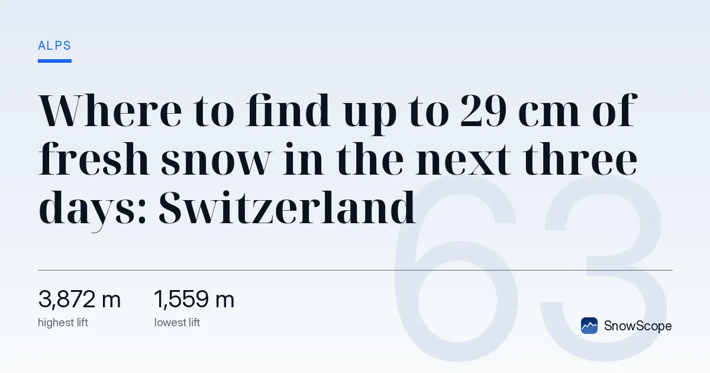

Where to find up to 29 cm of fresh snow in the next three days: Switzerland
14 of the 14 resorts we follow in Switzerland have snow on their upper slopes on Monday 23 November; Zermatt leads with 63 cm.
See the live snow forecast for Zermatt in the SnowScope appSnow depth, powder alerts and the 3D map, free.
Snow on the way
Coming up by 26 November: Zermatt 29 cm, Saas Fee 26 cm and Arosa Lenzerheide 22 cm.
| Resort | Snow depth | New snow, 72 h | Coming, next days | Top |
|---|---|---|---|---|
| Zermatt | 63 cm | 59 cm | 29 cm | 3,872 m |
| Saas Fee | 48 cm | 38 cm | 26 cm | 3,556 m |
| Engelberg-Titlis | 48 cm | 89 cm | 22 cm | 3,040 m |
| Arosa Lenzerheide | 30 cm | 44 cm | 22 cm | 2,854 m |
| St. Moritz | 22 cm | 21 cm | 21 cm | 3,021 m |
| Crans-Montana | 56 cm | 72 cm | 20 cm | 2,872 m |

What fell in the last three days
Most new snow in 72 hours: Engelberg-Titlis 89 cm, Verbier 74 cm and Crans-Montana 72 cm.
The top three in detail
Zermatt reports 63 cm up top; the lifts reach 3,872 m. Fresh snow: 59 cm in three days, forecast 29 cm by 26 November.
Saas Fee: 48 cm on the upper slopes (top lift 3,556 m), 38 cm new in 72 hours, 26 cm more by 26 November.
Arosa Lenzerheide: 30 cm on the upper slopes (top lift 2,854 m), 44 cm new in 72 hours, 22 cm more by 26 November.
Engelberg-Titlis: 48 cm on the upper slopes (top lift 3,040 m), 89 cm new in 72 hours, 22 cm more by 26 November.
Snow on the upper slopes
Half of the 14 resorts here have more than 42 cm up top, half have less.
Behind the leader: Crans-Montana (56 cm), Engelberg-Titlis (48 cm), Saas Fee (48 cm) and Mürren/Schilthorn (40 cm).
Off-piste and touring
With up to 89 cm of fresh snow, the first runs off the groomers will be soft. Read the local avalanche bulletin first and keep to slopes you know: fresh snow on a thin early base hides rocks.
New snow on a cold base means the best piste conditions of the week, and the steep runs ski well again.
Pick for a short trip
For a short trip, Engelberg-Titlis is the pick: 48 cm on the upper slopes now and 22 cm more by 26 November.
For a short trip, combine a cheap day pass in the morning with the best snow on the highest lifts.
Tips for skiers
- Off-piste only after reading the avalanche bulletin.
- Check which lifts are open before you drive.
About these numbers
Resort snow depths are the deepest snow on the resort's upper slopes on the date shown; they are estimates for an area, not a measurement at one point. Forecasts can change. Always read the official avalanche bulletin before going off-piste.
Cite this report
For research, teaching or the press: the numbers and charts are free to reuse under CC BY 4.0 with this citation.
SnowScope (2026), Where to find up to 29 cm of fresh snow in the next three days: Switzerland, https://snowscope.app/blog/en/2026/11/neuschnee-schweiz-23-november-2026.html, accessed 2026-11-23
SnowScope (Atlas Labs). (2026, November 23). Where to find up to 29 cm of fresh snow in the next three days: Switzerland. SnowScope snow reports. https://snowscope.app/blog/en/2026/11/neuschnee-schweiz-23-november-2026.html
BibTeX
@misc{snowscope2026neuschneeschweiz23novemb,
author = {{SnowScope (Atlas Labs)}},
title = {Where to find up to 29 cm of fresh snow in the next three days: Switzerland},
year = {2026},
month = nov,
howpublished = {\url{https://snowscope.app/blog/en/2026/11/neuschnee-schweiz-23-november-2026.html}},
note = {Published 2026-11-23 13:37 UTC; accessed 2026-11-23}
}· CC BY 4.0 · Methods, data and tools →
Zermatt: snow and temperature by height, this winter vs last (tools) →
Follow Zermatt
Free: a message when fresh snow is coming, and the forecast every morning.
More snow reports

Saas-Fee gets 22 cm on upper slopes next week, with Thursday 26 November the heaviest day. Forecast from 16 November 2026.

Laax forecast 23–29 Nov: 21 cm at the top, 17 cm mid-mountain, 6 cm at base. Thursday 26 is the heaviest day.

Engelberg snow forecast for 23–29 November 2026: 22 cm at the top (2–42 cm), 7 cm at the base, snowiest day Thursday 26 November, with neighbours compared.